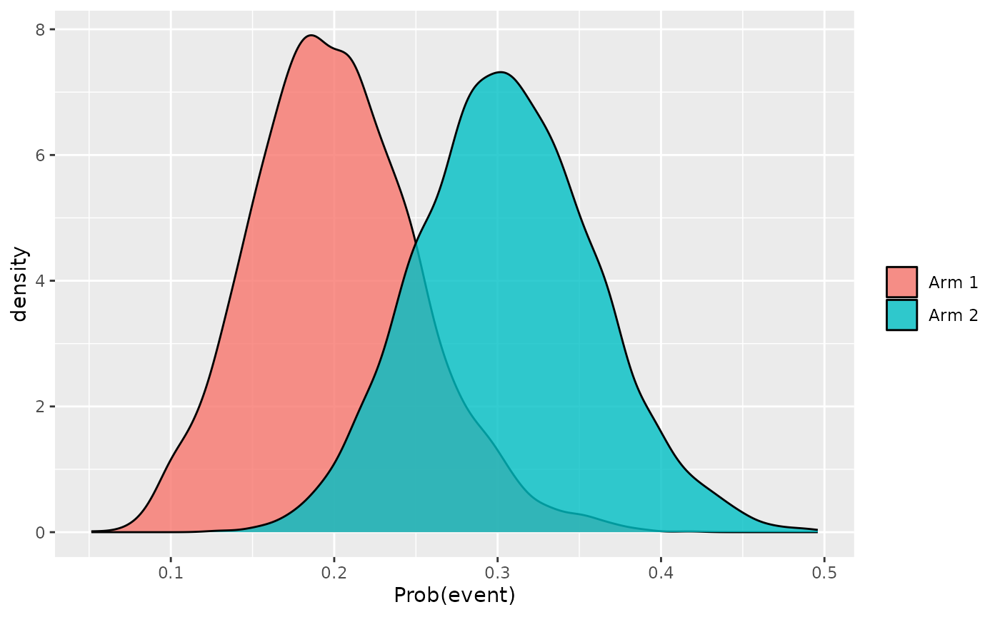

3. BSSD on an unblinded ongoing study
Source:vignettes/article-3-unblinded_bssd.Rmd
article-3-unblinded_bssd.RmdBSSD for an unblinded ongoing study
In Article 2 - BSSD on a blinded ongoing study, we used an informative prior for the placebo arm in the BSSD analysis of an ongoing blinded study. In this article, we demonstrate how the same BSSD method can use a prior and the known treatment allocations to perform a safety signal analysis on an unblinded ongoing study.
Let us set up as before:
set.seed(2024)
prob_arm1 <- 1 / 3
N <- 100
time <- 0.5 + cumsum(rexp(N, 100))
arm <- sample(1:2, size = N, replace = TRUE, prob = c(prob_arm1, 1 - prob_arm1))
hazard1 <- 0.1
hazard2 <- 0.2
prob <- numeric(length = N)
prob[arm == 1] <- 1 - exp(- hazard1 * time[arm == 1])
prob[arm == 2] <- 1 - exp(- hazard2 * time[arm == 2])
y <- rbinom(N, size = 1, prob = prob)We will use the following MAP prior derived using patient-level data from relevant historical studies for the placebo arm. See this link: Patient-level MAP prior for a refresher on how derive MAP priors using patient-level data.
We will also use a Beta(1/3, 1/3) prior on the active arm, reflecting our relative ignorance:
w2 <- 1
pi2_alpha <- 1 / 3
pi2_beta <- 1 / 3Where treatment allocations are available, we can perform an
unblinded analysis by dropping the prob_arm1 parameter and
specifying the tmt parameter instead:
fit_u <- stan_bssd(y = y, time = time, tmt = arm,
w1 = w1, pi1_alpha = pi1_alpha, pi1_beta = pi1_beta,
w2 = w2, pi2_alpha = pi2_alpha, pi2_beta = pi2_beta,
refresh = 0, seed = 2024)Note that the tmt argument should be a vector of the
values 1 (in this example, for placebo) and 2 (in this example, for
active).
The returned object is of the same type as the fit object of the blinded model fit, so the same functions are supported:
plot(fit_u)
Comparing the two density plots from the blinded and unblinded analysis, we observe that the distributions are narrower in the unblinded analysis due to the inclusion of crucial explanatory data on the actual treatment allocations. The posterior probability that the true rate in the active arm is greater than that in the placebo arm, given the known treatment allocation:
fit_u
#> Prob(Event) in arm 1: 0.201 (95% HPDI 0.102, 0.301)
#> Prob(Event) in arm 2: 0.306 (95% HPDI 0.199, 0.411)
#> Prob(Event rate in arm 2 > arm 1): 0.921 (95% HPDI 0.914, 0.926)